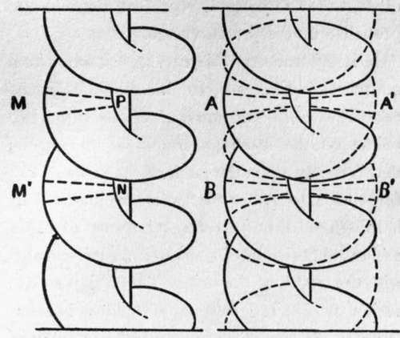

Chapter VII. The Propeller
Description
This section is from the book "The New Art Of Flying", by Waldemar Kaempffert. Also available from Amazon: The New Art of Flying.
Chapter VII. The Propeller
Feathering paddles, somewhat like those to be found on steamboats, beating wings, like those of a bird, sweeps or oars have all been suggested as means for propelling the flying-machine; but the screw propeller is the only device that has met with any success. The screw propeller is the most important adjunct of the aeroplane, and also the most deficient. The circumstance is remarkable because the screw or helical rotating propeller was associated with schemes of aerial navigation no less than four centuries ago, and by no less a personage than the great artist-mechanician, Leonardo da Vinci, at the end of the fifteenth century.
Leonardo da Vinci's propeller was a screw or helix of a single " worm " or thread — practically all " worm " — comprising an entire convolution, of which the modern equivalent would be a single-bladed screw, blades being a much later development. It is not difficult to imagine how the original screw propeller came to be of the single " worm " type, and why one complete turn of the " worm " should be deemed essential. These were matters of subsequent development, the departures being suggested by experiment and trial.
It was first discovered by actual comparative trials that half a convolution of the " worm " was fully as efficient as a whole turn, and then that a quarter turn was more efficient than half. But with this curtailment of the helix a formidable difficulty arose. It had now developed into a one-bladed screw; it was unsymmetrical and, consequently, unbalanced. Centrifugal force and one-sided thrust jointly interposed, with poor results.
Eventually it dawned on the minds of the pioneer experimenters that to produce a more efficient, symmetrical, and compact screw propeller — while employing only a fraction of a convolution — two or more " worms," now reduced to blades, were necessary.
No perfect definition of a screw propeller ' has ever been given. It is usually defined as an organ which, by pressing upon a fluid, propels the vehicle to which it is attached. In a sense, the screw propeller may be regarded as a rotating aeroplane, with an angle of incidence, known as its " pitch," and a " camber," which is its curve. But the propeller differs from the aeroplane in that the blades are continually passing over the same spot many times in a second in air already disturbed. This is one reason why the propeller offers a far more difficult problem than the plane.
By the " pitch " of a propeller is meant the theoretical distance that the propeller would move forward in one revolution in a solid. Because a propeller revolves in air, a very thin and yielding medium, it loses a certain amount of power, which loss is known as its " slip." If the propeller in one revolution moves forward theoretically six inches, but actually only three inches, the loss of power or " slip " is fifty per cent. The slip varies with different speeds. To find the best pitch, the best curvature, the best diameter, the best speed, is theproblem that confronts the propeller designer.
The ideal aerial propeller is one that can move through the air without friction. If the ideal could be attained, the entire power of the motor would be transformed into useful work, and a maximum thrust would be transmitted to the propeller shaft. The actual aerial propeller falls far short of that ideal. Its blades are not plane, but are curved in a manner skilfully designed to obtain a maximum efficiency. In order to give an idea of this curvature and its possible variations, consider a vertical section of an Archimedes screw (Fig. 41). Let us study the small slice, M. This small element is not a plane surface, but has a curvature which depends upon the pitch of the screw and its radius. Two such elements attached, opposite each other, to the same shaft represent a two-bladed propeller of definite curvature.
Fig. 41. A single-threaded and a double-threaded screw. A two-bladed aeroplane propeller may be conceived to have been cut from a double-threaded screw, i. e., the sections A and A' and the sections B and B'.
It is evident that this curvature cannot be a matter of indifference, for it is intimately connected with the distance A B, between two points on the same generatrix of the screw; that is to say, upon the pitch of the screw. The form of a propeller blade can be imitated by holding one end of a rectangular strip of paper and twisting the other end about an axis parallel with the length of the strip. The Wrights form such a surface in deforming aeroplanes in steering. If the aeroplane were attached to a fixed vertical axis, it would revolve about this axis like an ordinary propeller during a turn. The true screw-propeller in its simplest and most efficient type is but a very short length cut from a two-thread screw, in which the thread is relatively very deep, with a pitch equal to about two thirds of its diameter. A twist or curve in a propeller blade is necessary because the hub and the outer edge of the blade revolve at different speeds. The outer edge of the blade clearly must sweep through a greater distance in a given time than the hub. In order that all parts may theoretically grip the air equally, the angle is steeper at the centre than at the outer edge. In practice the hub portion has a much lower efficiency than the outer edge of the blade.
Just how many blades the propeller should have once gave us much concern. Some air-propellers have two blades, some three, some four. It is now generally conceded that nothing is to be gained by three and four blades, and that the two-bladed propeller is indeed the most efficient.
The Ericsson propeller (marine) was formed of a short section of a 12-thread screw of very coarse pitch and proved very inefficient. The aerial fan propeller of Moy (not a screw) had six broad vanes enclosed in a hoop and was but little better. The same remark applies to the propellers of Henson, Stringfellow, Linfield, Du Temple, and many others. Even the first propeller fans used by Langley on his earliest aerial model were six-bladed. In his subsequent and highly successful model aerodrome the twin propellers were two-bladed true screws, as also were those of the Maxim machine.
Continue to: